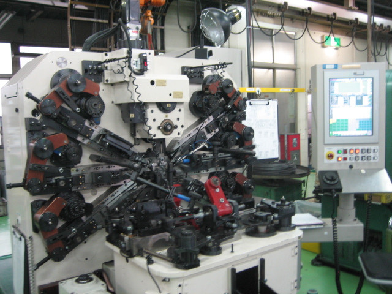
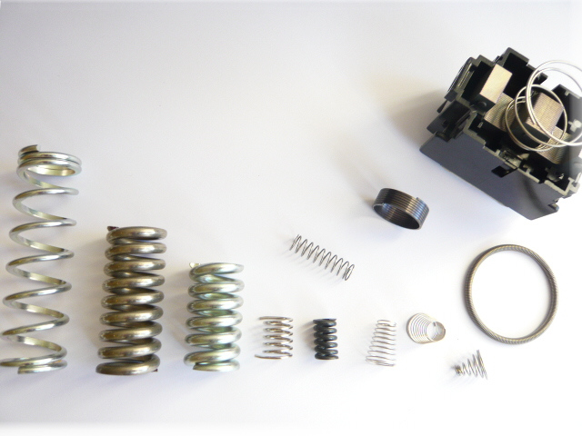

圧縮スプリング
〜 φ6.0
押し戻す力を受け持つバネです。CFX-8（φ2.3〜5.0）と NCF-10（φ4.0〜12.0）のコイリングマシンで巻きます。
バネのご相談で最初に決まるのは線径です。保有する8台の対応範囲を、1本の対数目盛の上に重ねました。φ0.3 から φ12.0 まで切れ目はありません。
このほか TYPE専用加工機（旭精機工業／NCフォーミングマシン・シャッター軸加工機／φ2.0）を保有し、長さのある加工に対応します。検査は画像寸法測定器 IM-6000（キーエンス／660万画素）で行います。

お客様の用途に合わせて製作します。試作から量産までお任せください。
〜 φ6.0
押し戻す力を受け持つバネです。CFX-8（φ2.3〜5.0）と NCF-10（φ4.0〜12.0）のコイリングマシンで巻きます。
φ0.6 〜 φ3.5
引き戻す力を受け持つバネです。テンションフォーマ TF-23S ほか3台で対応します。
〜 φ6.0
ねじりバネです。用途に合わせて作成します。試作から量産までお任せください。
〜 φ2.0 程度
お客様の用途に合わせた多様な形状を製作します。主にバルブの固定に使われています。
φ2.0
TYPE専用加工機を使用することで、長さのある加工ができます。シャッター軸加工機です。
φ2.6 〜 φ6.0
フォーミングからプレスまで加工可能です。現在この線径帯で加工しています。
要相談
各種板バネ、およびコーティングも可能です。ぜひご相談ください。

現行サイトで公開されている有資格・講習受講者の一覧です。2009年12月24日にエコアクション21の認証を取得しました。
本社工場（神奈川）と栃木工場に加え、タイの合弁会社と中国の独資会社があります。国内で試作し海外で量産する、といったご相談も承ります。
JAPAN — HEAD OFFICE
本社工場
〒252-0816 神奈川県藤沢市遠藤2002-4JAPAN — TOCHIGI
栃木工場
〒322-0026 栃木県鹿沼市茂呂781-9JAPAN — SAGA
株式会社 朋有
〒842-0055 佐賀県神埼市千代田町下西647-1THAILAND — JOINT VENTURE
PRECISION TECHNOLOGY CO., LTD
142 Soi Latphrao 80 (Chantima), Latphrao Road,CHINA — WHOLLY OWNED
SUZHOU YAMATO INDUSTRY CO., LTD
蘇州雅馬徳金属制品有限公司
φ0.3からφ12.0まで対応します。8台の専用機で線径帯を分担しており、細線はワフィオス社FMU-1（φ0.3〜φ1.6）、太線は旭精機工業NCF-10（φ4.0〜φ12.0）が担当します。範囲に切れ目はありません。
圧縮スプリング、引張スプリング、トーションスプリング（ねじりバネ）、線加工に対応します。板バネや、バネへのコーティングも承ります。電流線コイル（銅線）はフォーミングからプレスまで加工可能で、現在φ2.6〜φ6.0を扱っています。
できます。お客様の用途に合わせて製作し、試作から量産までお任せいただけます。多様な形状の製作に対応します。
作れます。ワフィオス社のユニバーサルフォーミングマシンFMU-6は、独自のワフィオス・プログラミングシステムとCNC制御により多様な3次元形状のバネ成形を実現します。1993年にいち早くドイツ・ワフィオス社のCNCコイリング・ベンディングセンターを導入しました。
キーエンス製の画像寸法測定器IM-6000（660万画素）を保有しています。バネに求められる最も重要なスペックは精度であり、情報機器のダウンサイジングに必要な精密バネでは特に重要なファクターです。